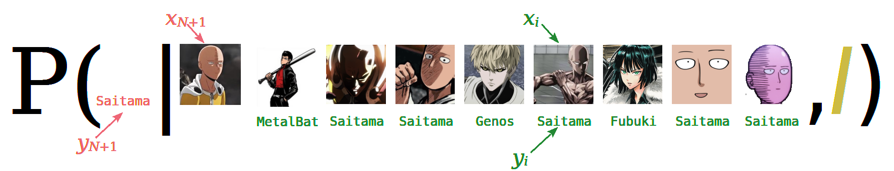
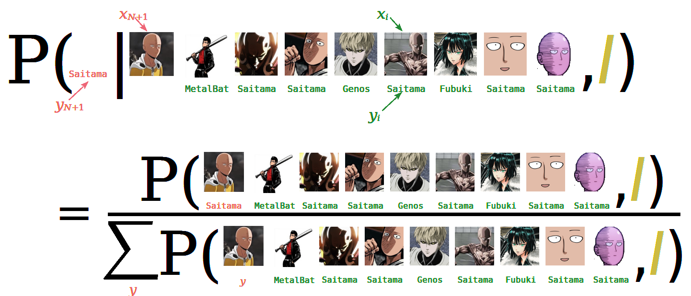

19 Third connection with machine learning
\[ \DeclarePairedDelimiters{\set}{\{}{\}} \DeclareMathOperator*{\argmax}{arg\,max} \]
In chapter 11 we made a second tentative connection between the notions about probability explored until then, and notions from machine learning. We considered the possibility that a machine-learning algorithm is like an agent that has some built-in background information (corresponding to the algorithm’s architecture), has received pieces of information (corresponding to the data about perfectly known instances of the task), and is assessing a not-previously known piece of information (the outcome in a new task instance):
\[ \mathrm{P}(\underbracket[0ex]{\color[RGB]{238,102,119}\mathsfit{D}_{N+1}}_{\mathclap{\color[RGB]{238,102,119}\text{outcome?}}} \nonscript\:\vert\nonscript\:\mathopen{} \color[RGB]{34,136,51}\underbracket[0ex]{\mathsfit{D}_N \land \dotsb \land \mathsfit{D}_2 \land \mathsfit{D}_1}_{\mathclap{\color[RGB]{34,136,51}\text{training data?}}} \color[RGB]{0,0,0}\land \underbracket[0ex]{\color[RGB]{204,187,68}\mathsfit{I}}_{\mathrlap{\color[RGB]{204,187,68}\uparrow\ \text{architecture?}}}) \]
The correspondence about training data and architecture seems somewhat convincing, the one about outcome will need more exploration, because it seems to involve some decision process – and we haven’t fully explored the machinery of decision-making yet.
Having introduced the notion of quantity in the latest chapters 12 and 13, we recognize that training data about a task instance concern some quantity and its value, so they can be expressed by a sentence like \(D_i\mathord{\nonscript\mkern 1mu\textrm{\small=}\nonscript\mkern 1mu}\mathopen{}d_i\), where
- \(i\) is the instance: \(1,2,\dotsc,N\)
- \(D_i\) describes the kind of data at instance \(i\), for example “128 × 128 image with 24-bit colour depth”
- \(d_i\) is the value of the data at instance \(i\), for example the one here at the margin
And similarly for the outcome of a new task instance where the algorithm is applied for real, which we consider as instance \(N+1\). So we can rewrite the correspondence above as follows:
\[ \mathrm{P}(\underbracket[0ex]{\color[RGB]{238,102,119}D_{N+1} \mathord{\nonscript\mkern 1mu\textrm{\small=}\nonscript\mkern 1mu}\mathopen{}d_{N+1}}_{\mathclap{\color[RGB]{238,102,119}\text{outcome?}}} \nonscript\:\vert\nonscript\:\mathopen{} \color[RGB]{34,136,51}\underbracket[0ex]{ D_N \mathord{\nonscript\mkern 1mu\textrm{\small=}\nonscript\mkern 1mu}\mathopen{}d_N \mathbin{\mkern-0.5mu,\mkern-0.5mu}\dotsb \mathbin{\mkern-0.5mu,\mkern-0.5mu}D_2 \mathord{\nonscript\mkern 1mu\textrm{\small=}\nonscript\mkern 1mu}\mathopen{}d_2 \mathbin{\mkern-0.5mu,\mkern-0.5mu}D_1 \mathord{\nonscript\mkern 1mu\textrm{\small=}\nonscript\mkern 1mu}\mathopen{}d_1}_{\mathclap{\color[RGB]{34,136,51}\text{training data?}}} \color[RGB]{0,0,0}\mathbin{\mkern-0.5mu,\mkern-0.5mu}\underbracket[0ex]{\color[RGB]{204,187,68}\mathsfit{I}}_{\mathrlap{\color[RGB]{204,187,68}\uparrow\ \text{architecture?}}}) \]
This kind of inference is what we explored in the “next-three-patients” scenario of § 17.3 and some of the following sections.
Let’s extend this tentative connection even further.
Machine-learning textbooks usually make a distinction between “supervised learning” and “unsupervised learning”. Unfortunately the explanation given for this distinction is sometimes misleading:
Some books say that in supervised learning the algorithm “learns a functional relationship between some kind of input and some kind of output”. This is usually not true: in the vast majority of applications there isn’t any functional relationship between input and output at all; at most only a statistical or probabilistic one. This is clear from the fact that two training datapoints can have identical inputs but different outputs (here is an example); and you remember from Calculus I that we can’t speak of a function in this case. It’s unclear how something that doesn’t exist can be learned.
Books that give this kind of explanation are unfortunately oversimplifying things, to the point of being incorrect1. The algorithm is actually doing something more complex – which we shall analyse in detail later.
Yet other books say that the distinction rests in the kind of data used for training: “input-output” pairs for supervised learning, and only “inputs” for unsupervised learning. It’s good that this description doesn’t mention “functions”, but it is still unsatisfactory, because it confuses the means with the purpose. It’s a little like saying that the difference between car and aeroplane is that the latter has wings. Sure – but why? This description misses the essential difference between these two means of transportation: they operate through different material media and exploit different kinds of physics; that’s why the second has wings.
Books that give this kind of explanation focus on a more “operational” kind of knowledge, which is sufficient for their specific goals. The very terms “supervised learning” and “unsupervised learning” indeed emphasize this operational side. But for our goal we need to look beyond operational differences and to understand their reasons.
More enlightening books explain that the distinction rests in what the algorithm needs for each new application: in supervised learning, it uses features – that is, additional information – available at each new application instance; whereas in unsupervised learning it doesn’t: no new instance-dependent information is given.
From this point of view, we also see that the distinction between “supervised” and “unsupervised” becomes less sharp: we can imagine to increase the information that’s used at each new instance from zero (“unsupervised”) to larger and larger amounts (“supervised”).
{kind=link}
1 Paraphrasing M. W. Zemansky:
“Teaching machine learning
Is as easy as a song:
You think you make it simpler
When you make it slightly wrong!”
Going back to our tentative correspondence with inference and decision-making agents, we see a strong similarity between unsupervised & supervised learning and two kinds of inference:
In the unsupervised case, even if the quantities \({\color[RGB]{34,136,51}D_1}, {\color[RGB]{34,136,51}D_2}, {\color[RGB]{34,136,51}\dotsc}, {\color[RGB]{34,136,51}D_N}\) in the known instances and in the new instance \({\color[RGB]{238,102,119}D_{N+1}}\) might consist of joint or complex quantities (chapter 13), we are not interested in their possible decomposition into component quantities. So we still have the tentative connection above:
\[ \mathrm{P}(\underbracket[0ex]{\color[RGB]{238,102,119}D_{N+1} \mathord{\nonscript\mkern 1mu\textrm{\small=}\nonscript\mkern 1mu}\mathopen{}d_{N+1}}_{\mathclap{\color[RGB]{238,102,119}\text{outcome?}}} \nonscript\:\vert\nonscript\:\mathopen{} \color[RGB]{34,136,51}\underbracket[0ex]{ D_N \mathord{\nonscript\mkern 1mu\textrm{\small=}\nonscript\mkern 1mu}\mathopen{}d_N \mathbin{\mkern-0.5mu,\mkern-0.5mu}\dotsb \mathbin{\mkern-0.5mu,\mkern-0.5mu}D_1 \mathord{\nonscript\mkern 1mu\textrm{\small=}\nonscript\mkern 1mu}\mathopen{}d_1}_{\mathclap{\color[RGB]{34,136,51}\text{training data?}}} \color[RGB]{0,0,0}\mathbin{\mkern-0.5mu,\mkern-0.5mu}\underbracket[0ex]{\color[RGB]{204,187,68}\mathsfit{I}}_{\mathrlap{\color[RGB]{204,187,68}\uparrow\ \text{architecture?}}}) \]
This is the kind of inference explored in the “next-three-patients” scenario of § 17.3. As another example or scenario, the agent may have been given information about a collection of images, and then tries to guess what the next image could be.
In the supervised case, the quantities in the known instances and in the new application are joint quantities:
\[ \begin{gathered} {\color[RGB]{34,136,51}D_N} = ({\color[RGB]{34,136,51}Y_N}, {\color[RGB]{34,136,51}X_N}), \ {\color[RGB]{34,136,51}\dotsc},\ {\color[RGB]{34,136,51}D_1} = ({\color[RGB]{34,136,51}Y_1}, {\color[RGB]{34,136,51}X_1}) \\[1ex] {\color[RGB]{238,102,119}D_{N+1}} = ({\color[RGB]{238,102,119}Y_{N+1}}, {\color[RGB]{238,102,119}X_{N+1}}) \end{gathered} \]
and we are interested in the \(X\) and \(Y\) component quantities separately. For instance, the \(X\)-quantity could be a 128 × 128-pixel image, as in the example above, and the \(Y\)-quantity could be a name whose domain is all characters in the One Punch Man series: \(\set{{\small\verb;Saitama;}, {\small\verb;Genos;}, {\small\verb;Fubuki;}, {\small\verb;MetalBat;}, \dotsc}\). The reason we make this separation is that, upon applying the algorithm in a new task instance, one of these component quantities, say \(\color[RGB]{238,102,119}X_{N+1}\), can actually be observed by the agent; so it is known. It’s the other component quantity, \(\color[RGB]{238,102,119}Y_{N+1}\), that the agent is uncertain about. The \(X\) quantities are often called “features”; and the \(Y\) quantities, “labels” (or “classes”). The agent therefore needs to draw the following inference:
\[ \mathrm{P}\bigl( {\color[RGB]{238,102,119}Y_{N+1} \mathord{\nonscript\mkern 1mu\textrm{\small=}\nonscript\mkern 1mu}\mathopen{}y_{N+1}} \pmb{\nonscript\:\big\vert\nonscript\:\mathopen{}} {\color[RGB]{238,102,119}X_{N+1} \mathord{\nonscript\mkern 1mu\textrm{\small=}\nonscript\mkern 1mu}\mathopen{}x_{N+1}}\, \mathbin{\mkern-0.5mu,\mkern-0.5mu}\, \color[RGB]{34,136,51}Y_N \mathord{\nonscript\mkern 1mu\textrm{\small=}\nonscript\mkern 1mu}\mathopen{}y_N \mathbin{\mkern-0.5mu,\mkern-0.5mu}X_N \mathord{\nonscript\mkern 1mu\textrm{\small=}\nonscript\mkern 1mu}\mathopen{}x_N \mathbin{\mkern-0.5mu,\mkern-0.5mu} \dotsb \mathbin{\mkern-0.5mu,\mkern-0.5mu} Y_1 \mathord{\nonscript\mkern 1mu\textrm{\small=}\nonscript\mkern 1mu}\mathopen{}y_1 \mathbin{\mkern-0.5mu,\mkern-0.5mu}X_1 \mathord{\nonscript\mkern 1mu\textrm{\small=}\nonscript\mkern 1mu}\mathopen{}x_1 \color[RGB]{0,0,0}\mathbin{\mkern-0.5mu,\mkern-0.5mu}{\color[RGB]{204,187,68}\mathsfit{I}} \bigr) \]
Or, to give an example with a pictorial representation:

This is the more complicated version of the “next-three-patients” scenario with “urgency & transportation”, discussed in § 17.4.
An interesting aspect of this new tentative correspondence is that there isn’t any essential difference between unsupervised and supervised cases. Consider the last probability above; using the formula for a conditional probability (§ 17.1) we have
\[ \begin{aligned} &\mathrm{P}\bigl( {\color[RGB]{238,102,119}Y_{N+1} \mathord{\nonscript\mkern 1mu\textrm{\small=}\nonscript\mkern 1mu}\mathopen{}y_{N+1}} \pmb{\nonscript\:\big\vert\nonscript\:\mathopen{}} {\color[RGB]{238,102,119}X_{N+1} \mathord{\nonscript\mkern 1mu\textrm{\small=}\nonscript\mkern 1mu}\mathopen{}x_{N+1}}\, \mathbin{\mkern-0.5mu,\mkern-0.5mu}\, \color[RGB]{34,136,51}Y_N \mathord{\nonscript\mkern 1mu\textrm{\small=}\nonscript\mkern 1mu}\mathopen{}y_N \mathbin{\mkern-0.5mu,\mkern-0.5mu}X_N \mathord{\nonscript\mkern 1mu\textrm{\small=}\nonscript\mkern 1mu}\mathopen{}x_N \mathbin{\mkern-0.5mu,\mkern-0.5mu} \dotsb \mathbin{\mkern-0.5mu,\mkern-0.5mu} Y_1 \mathord{\nonscript\mkern 1mu\textrm{\small=}\nonscript\mkern 1mu}\mathopen{}y_1 \mathbin{\mkern-0.5mu,\mkern-0.5mu}X_1 \mathord{\nonscript\mkern 1mu\textrm{\small=}\nonscript\mkern 1mu}\mathopen{}x_1 \color[RGB]{0,0,0}\mathbin{\mkern-0.5mu,\mkern-0.5mu}{\color[RGB]{204,187,68}\mathsfit{I}} \bigr) \\[2ex] &\qquad{}= \frac{ \mathrm{P}\bigl( \color[RGB]{187,187,187}\overbracket[1px]{\vphantom{\Bigl(} \color[RGB]{238,102,119}Y_{N+1} \mathord{\nonscript\mkern 1mu\textrm{\small=}\nonscript\mkern 1mu}\mathopen{}y_{N+1} \mathbin{\mkern-0.5mu,\mkern-0.5mu} \color[RGB]{238,102,119}X_{N+1} \mathord{\nonscript\mkern 1mu\textrm{\small=}\nonscript\mkern 1mu}\mathopen{}x_{N+1} }^\mathclap{{\color[RGB]{238,102,119}D_{N+1}\mathord{\nonscript\mkern 1mu\textrm{\small=}\nonscript\mkern 1mu}\mathopen{}d_{N+1}}} \color[RGB]{0,0,0} \mathbin{\mkern-0.5mu,\mkern-0.5mu} \color[RGB]{187,187,187}\overbracket[1px]{\vphantom{\Bigl(} \color[RGB]{34,136,51}Y_N \mathord{\nonscript\mkern 1mu\textrm{\small=}\nonscript\mkern 1mu}\mathopen{}y_N \mathbin{\mkern-0.5mu,\mkern-0.5mu}X_N \mathord{\nonscript\mkern 1mu\textrm{\small=}\nonscript\mkern 1mu}\mathopen{}x_N }^\mathclap{{\color[RGB]{34,136,51}D_{N}\mathord{\nonscript\mkern 1mu\textrm{\small=}\nonscript\mkern 1mu}\mathopen{}d_{N}}}\color[RGB]{34,136,51} \mathbin{\mkern-0.5mu,\mkern-0.5mu} \dotsb \mathbin{\mkern-0.5mu,\mkern-0.5mu} \color[RGB]{187,187,187}\overbracket[1px]{\vphantom{\Bigl(} \color[RGB]{34,136,51}Y_1 \mathord{\nonscript\mkern 1mu\textrm{\small=}\nonscript\mkern 1mu}\mathopen{}y_1 \mathbin{\mkern-0.5mu,\mkern-0.5mu}X_1 \mathord{\nonscript\mkern 1mu\textrm{\small=}\nonscript\mkern 1mu}\mathopen{}x_1 }^\mathclap{{\color[RGB]{34,136,51}D_{1}\mathord{\nonscript\mkern 1mu\textrm{\small=}\nonscript\mkern 1mu}\mathopen{}d_{1}}} \color[RGB]{0,0,0}\pmb{\nonscript\:\big\vert\nonscript\:\mathopen{}} {\color[RGB]{204,187,68}\mathsfit{I}} \bigr) }{ \sum_{\color[RGB]{238,102,119}y} \mathrm{P}\bigl( {\color[RGB]{238,102,119}Y_{N+1} \mathord{\nonscript\mkern 1mu\textrm{\small=}\nonscript\mkern 1mu}\mathopen{}y} \mathbin{\mkern-0.5mu,\mkern-0.5mu} {\color[RGB]{238,102,119}X_{N+1} \mathord{\nonscript\mkern 1mu\textrm{\small=}\nonscript\mkern 1mu}\mathopen{}x_{N+1}} \mathbin{\mkern-0.5mu,\mkern-0.5mu} \color[RGB]{34,136,51}Y_N \mathord{\nonscript\mkern 1mu\textrm{\small=}\nonscript\mkern 1mu}\mathopen{}y_N \mathbin{\mkern-0.5mu,\mkern-0.5mu}X_N \mathord{\nonscript\mkern 1mu\textrm{\small=}\nonscript\mkern 1mu}\mathopen{}x_N \mathbin{\mkern-0.5mu,\mkern-0.5mu} \dotsb \mathbin{\mkern-0.5mu,\mkern-0.5mu} Y_1 \mathord{\nonscript\mkern 1mu\textrm{\small=}\nonscript\mkern 1mu}\mathopen{}y_1 \mathbin{\mkern-0.5mu,\mkern-0.5mu}X_1 \mathord{\nonscript\mkern 1mu\textrm{\small=}\nonscript\mkern 1mu}\mathopen{}x_1 \color[RGB]{0,0,0}\pmb{\nonscript\:\big\vert\nonscript\:\mathopen{}} {\color[RGB]{204,187,68}\mathsfit{I}} \bigr) } \end{aligned} \]
This is a fraction between the probability for the “unsupervised case” (which we wrote above compactly in terms of \(D\) rather than \((Y,X)\)), and the same probability summed up for all possible values of \(\color[RGB]{238,102,119}Y_{N+1}\), which in the image-example above would be:

with a sum (\(\color[RGB]{238,102,119}y\)) over all possible character names of the series.
So if the agent has the probability for the “unsupervised case”, then with a simple computation it also has the probability for the “supervised case”, and many other cases that cannot be categorized as “unsupervised” or “supervised” (there is also a connection with “generative” vs “discriminative” algorithms here).
We seem to have found a formula that should lie at the core of any machine-learning algorithm: the formula for conditional probability, which covers all possible inference cases: with or without features, with or without previous data, and many other cases. If we want that an inference algorithm which “learns” from example data, and possibly use features, shall be optimal, then it must operate on the conditional-probability formula in one way or another – at least approximately.
What does such an optimal algorithm require, in order to operate in full? From the discussion of chapter 17 we see that it requires the following:
A joint probability distribution about all quantities representing features and instances; past, present, and future.
This joint probability distribution also expresses what kind of background knowledge the algorithm assumes, and therefore the kind of problems it can be applied to. It thus forms the “architecture” and “internal parameters” of the algorithm. For example, in § 17.3 and its exercises we examined a joint distribution expressing the belief that “the more often a specific case is seen, the more probable it is at the next instance”; and also another distribution expressing the opposite belief: “the more often a specific case is seen, the less probable it is at the next instance”.
Data from previous instances, that is, “training” or “learning” data.
Optionally, some quantities or “feature” data about the present instance.
Of these three requirements, the first seems the most difficult to implement. How to encode a belief distribution about a possibly infinite number of quantities, some of which may refer to the future? And how to choose such a belief distribution in a reasonable way?
This is what we discuss in the next chapters.